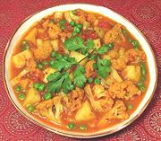

|
Cauliflower Potato & Pea CurryIndia - North Central (Uttar Pradesh) - Gobi Matar Rasedar | ||||
| Serves: Effort: Sched: DoAhead: |
4 main *** 1.1 hrs Yes |
Cauliflower is a luxury item in India, so many fine cauliflower recipes have been developed there. This one is particularly flavorful and goes well with chapatis or similar breads (see Note-4), or steamed basmati rice. | |||
|
1 12 1-1/4 1-1/2 ------- 1 2 1 1 ------- 3 2 2-1/2 1 ------- |
# oz # c --- t T t t --- T t c t --- |
Cauliflower Potatoes (1) Tomatoes, ripe Peas, frozen (2) -- Spices Cumin seeds Coriander seeds Turmeric Chili powder (3) ------- Oil or ghee Cumin seeds Water Salt -- Garnish Cilantro leaves |
PREP - (25 min)
|
imv_caulipotato2 r 110102 cic256 -
www.clovegarden.com
©Andrew Grygus - agryg@aaxnet.com - Linking to and
non-commercial use of this page is permitted.